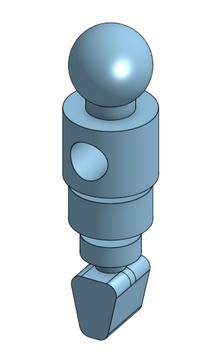
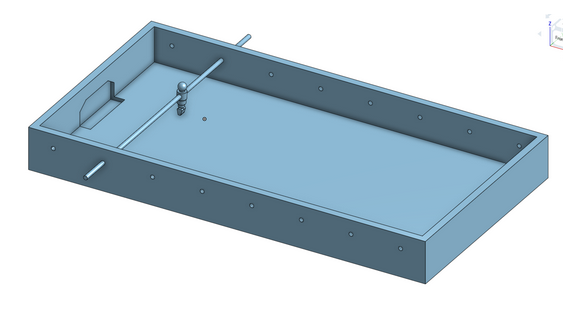
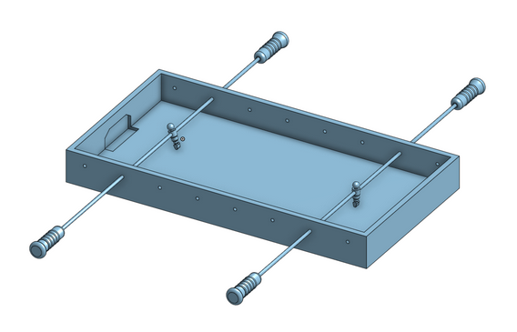
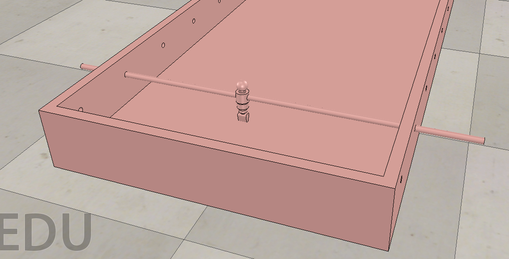
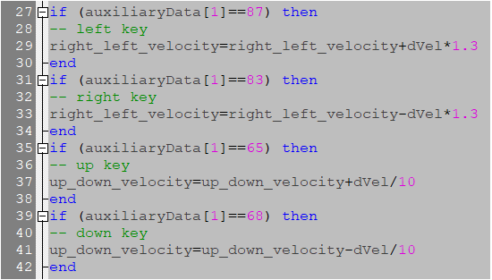

在期中之前手足球進度著重在功能模擬，在外觀的部分並沒有太多的設計。
足球球員 :

簡易組合 :

說明 :
將組合件匯入V-rep，將零件做裝配並給予各部位該有的參數設定(例:轉桿必須為可作動的、球員必須設為可碰撞的，等等)，再加上旋轉軸以及36 mm的足球，旋轉軸設定轉速為100，使球員做最簡單的踢球動作(無法手動控制)。
以下為操作影片 :
說明 : 模型與< 版本一 > 一樣，不一樣的地方在於V-rep裡多了一根旋轉軸以及程式碼來控制足球員
以下為操作過程 :
組合圖 :

說明 : 這版本中稍微升級了操縱感的握把，是為了避免下圖情況發生，操縱桿會超出它應有的活動範圍。

另外，此版本跟上個版本最大差異在於，新增了另一組操縱桿及球員，可以分別使用"方向件"和"WASD"做控制。
程式碼更改部分如下 :
W : 87
A : 65
S : 83
D : 68

以下為成果展示影片 :